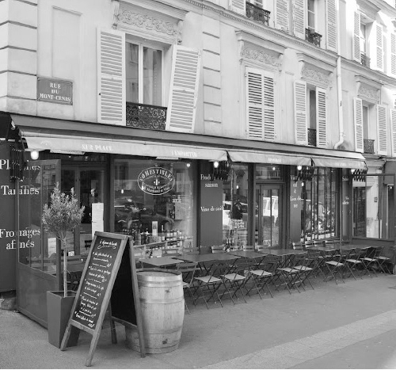

Nhắc đến nước Pháp nói chung và Paris nói riêng, nhiều người nghĩ đến văn hóa ẩm thực đã được nâng lên đến mức nghệ thuật, đến những nhà hàng cực kỳ sang trọng, những món ăn được chế biến cầu kỳ bậc nhất thế giới.

Một nhà hàng phong cách đặc trưng Paris với bàn ăn ngoài trời. (Ảnh: Tác giả)
Người ta cũng có thể nghĩ đến nghệ thuật nướng bánh, làm bánh ngọt phát triển nhất ở châu Âu; đến chiếc bánh mỳ dài như cây gậy đặc trưng của Pháp; đến những sản phẩm từ bơ sữa, đặc biệt là món pho mát cực kỳ đa dạng hay những chai rượu vang Pháp được biết đến bởi tất cả những người sành rượu, yêu rượu trên thế giới.
Chương này sẽ không thực sự có một danh lam thắng cảnh cụ thể nào. “Nghệ thuật ẩm thực” Pháp bản thân nó đã là một kỳ quan mà có lẽ ta chẳng bao giờ khám phá hết. Ẩm thực Pháp đã được Unesco xếp hạng “di sản văn hóa phi vật thể của nhân loại”. Bởi thế mà tôi viết chương này, để kể với bạn về văn hóa ăn uống của người Pháp, về những thói quen, phong tục, đặc điểm của những món ăn, bữa ăn dù sang trọng hay đời thường. Và tất nhiên, xen vào đó, phía sau đó, tôi lại viết về những suy nghĩ, cảm nhận, những câu chuyện của riêng tôi.
Từ khi đến Pháp, để kiếm sống, tồn tại và học tiếng Pháp, tôi đã làm đủ thứ nghề: đi phát báo, phát tờ rơi, làm lập trình tin học, làm phụ nề, thợ mộc, đi bán hàng… nhưng nhiều nhất là trong lĩnh vực ăn uống, nhà hàng: từ rửa bát, phụ bếp đến bán đồ ăn nhanh, từ bồi bàn, runner (nghề chuyển đồ ăn trong các nhà hàng sang trọng mà có lẽ tôi sẽ giải thích sau một chút) đến batender (người pha rượu). Tôi làm cho đủ loại, từ nhà hàng Việt bình dân, các chuỗi nhà hàng Tàu hay Nhật hạng trung bình đến cả những nhà hàng Pháp cực kỳ sang trọng. Bởi thế tôi có thêm ít nhiều kiến thức trong lĩnh vực này và rất nhiều câu chuyện để kể với bạn.
Từ cách “ăn uống” của người Pháp…
Trước tiên cần nói rằng trong lĩnh vực ăn uống, người Pháp rất coi trọng vấn đề vệ sinh. Thực khách ở Pháp chắc chắn sẽ không ăn nếu trên đĩa, trên cốc của họ có một vết vân tay của người phục vụ, dù chỉ mờ mờ. Họ cũng không ăn nếu như mặt bàn còn chưa được lau dọn và sửa soạn lại như mới sau khi khách trước rời đi. Các quy định, luật lệ về vệ sinh thực phẩm trong các nhà hàng cũng được đặt ra và giám sát khá chặt chẽ, tất nhiên không phải nhà hàng nào cũng tuân thủ, nhưng nếu bị phát hiện, sẽ bị phạt rất nặng, thậm chí bị đóng cửa vĩnh viễn. Tôi nhớ lại thời gian làm trong cái bếp vừa nhỏ vừa nóng đến ngột ngạt ở Quận 13. Mỗi khi nền nhà loang nước, tôi lấy cái khăn lau nhà ra lau vội rồi vứt đó, bị bà chủ la hét chóng cả mặt. Bà ấy bắt tôi mỗi lần lau xong phải giặt ngay và phơi lên, không được để dưới nền nhà. Tôi bảo “để đấy lát lại lau tiếp, cuối buổi giặt một thể.” Bà bảo: “Mày muốn tao sạt nghiệp?” Thì ra theo quy định là như vậy, bởi khăn lau xong không giặt và phơi lên mà để trên nền nhà có thể là một ổ phát triển thuận lợi cho vi trùng, và nếu có đoàn kiểm tra, một cái khăn nằm trên nền nhà như vậy dù chỉ trong năm phút cũng có thể khiến nhà hàng bị phạt hàng ngàn euro.
Đó chỉ đơn giản là quy định về chiếc khăn lau nhà. Còn hàng trăm điều khoản, quy định về vệ sinh khác, về nhiệt độ cho từng loại ngăn chứa đồ trong tủ lạnh, về việc phân loại, lưu giữ đồ ăn, nhất là đồ đã qua chế biến không được để qua đêm. Thời còn nghèo đói, làm việc cho một nhà hàng sushi (món ăn với cá sống truyền thống của Nhật Bản), tôi đã đau lòng khi mỗi đêm phải vứt vào thùng rác hàng trăm hộp sushi bán không hết, dù chúng chỉ vừa mới được chế biến trong buổi tối. Tại sao phải vứt chúng đi, bạn sẽ hiểu khi đọc câu chuyện ở cuối chương này.
Ở trong các nhà hàng, trừ các nhà hàng ăn nhanh và các quán phục vụ dân công sở lúc bữa trưa, người Pháp không thích tiếng ồn. Điều này có lẽ cũng trái ngược với người Việt. Không phải người Pháp khi đi ăn thì không nói chuyện, cười đùa, nhưng họ làm những điều đó rất nhẹ nhàng. Càng ở trong những nhà hàng nhỏ hẹp, khoảng cách giữa bàn này đến bàn kia càng ít thì người ta càng ‘‘nói khẽ, cười duyên”. Bởi đối với người Pháp, đi ăn uống là lúc thư giãn, cần sự yên tĩnh để nghỉ ngơi và tận hưởng món ăn ngon. Cũng vì thế mà trong các nhà hàng, nhất là nhà hàng sang trọng, ít khi có trẻ con, nhất là trẻ con ở độ tuổi còn chưa thể “khống chế” được (khoảng dưới ba tuổi). Các cặp vợ chồng trẻ có con nhỏ, nếu muốn đi thưởng thức một bữa tối sẽ gửi con cho bố mẹ trông hộ hoặc thuê người đến trông, để có thể tay trong tay đi ăn theo cách thư giãn nhất. Điều đó không có nghĩa là trẻ con không được ăn ngon, bởi nếu muốn thưởng thức món ăn ngon trong không khí gia đình, các ông bố bà mẹ sẽ mua về nhà hoặc đặt mang đến tận nơi, như thế con cái họ sẽ được vừa ăn vừa làm ồn thoải mái nếu chúng thích mà không làm ảnh hưởng đến người khác. Nếu không, họ sẽ đến những quán ăn nhanh, quán ăn kiểu gia đình có không gian rộng hay ở ngoài trời chứ không đưa đến những quán theo kiểu gastronomie (quán ẩm thực cao cấp).
Trong các quán ăn, kể cả quán bình dân, người Pháp luôn coi trọng cách trang trí nội thất, màu sắc đẹp, dễ chịu, ánh sáng tự nhiên… Tức là họ coi trọng mọi yếu tố để bữa ăn thực sự nhẹ nhàng, thư giãn để đầu óc được thoải mái hoàn toàn và tận hưởng hương vị của thức ăn. Họ đặc biệt coi trọng việc tôn trọng người khác và việc được tôn trọng. Tôi không thích thú cao độ gì chuyện ngồi “thì thầm” khi đi ăn tối (thật ra, khi ai cũng nói nhẹ nhàng thì chỉ cần nói nhẹ nhàng là đủ nghe thấy nhau), nhưng rõ ràng là ăn tối như thế, bữa ăn trở nên hấp dẫn, ngon lành và dễ chịu hơn nhiều so với khi quanh ta ầm ĩ những tiếng mắng con, cười đùa, những câu chuyện chém gió, chuông điện thoại, cụng ly và những gã gào lên “dzo dzo” như để thể hiện sức mạnh. Tất nhiên sự khác biệt đến từ cách sống khác nhau. Nhưng cách sống, văn hóa nào cũng có giá trị của nó. Tôi sẽ không cảm thấy bị phiền khi ngồi ăn mà xung quanh tiếng nói cười rộn rã, vui vẻ như trong nhiều quán ăn ở Hà Nội, khi cách giao tiếp của mọi người vẫn ở trong chừng mực có văn hóa. Còn vượt quá giới hạn, giống như tai của ta chỉ chịu được âm thanh đến một “ngưỡng” nào đó trước khi việc “nghe” trở thành “chịu đựng” và thậm chí là “đau đớn”. Nếu khách hàng đã tự coi trọng nhau như thế, nhà hàng sẽ còn coi trọng hơn. Ở Pháp, bạn sẽ không bao giờ nghe thấy tiếng dọn bát đũa ầm ầm, tiếng chân chạy hay la hét của nhân viên, quát tháo của chủ, chứ đừng nói đến chuyện ngồi ăn phải nghe chủ quán mắng người giúp việc như hát hay, văng ra đủ thứ tùm lum vào mặt khách, ăn thấy đắng, lần sau tôi chẳng bao giờ quay lại. Tất nhiên không phải quán nào cũng vậy, nhưng chuyện ấy thường gặp quá, và đau buồn hơn là những chuyện đó mọi người chẳng ai chú ý, hay phản đối (???), kể cả những “thượng đế” đang chi tiền ra kia.
Trong các quán ăn Pháp, thực khách thường phải đợi rất lâu. Quán càng sang trọng càng phải đợi lâu. Để được ngồi vào bàn đã phải đợi (ấy là chưa kể những quán có khi phải đặt trước qua điện thoại cả tuần, cả tháng hoặc thậm chí cả năm mới có chỗ), được người phục vụ đến cho ta đặt món cũng phải đợi, và đặt món xong rồi đến lúc được ăn thì còn đợi lâu hơn. Việc chờ đợi như thế có nhiều lý do. Đầu tiên là vì nhân công ở các nước phát triển như ở Pháp rất đắt đỏ, nên không có nhiều người phục vụ. Sau nữa là cũng bởi vậy, người Pháp có thói quen chờ đợi mà không sốt ruột, đi xem phim đợi, đi cắt tóc đợi, đi ăn uống cũng đợi.
Người Pháp cũng xem lúc đi ăn là khi thư giãn, chuyện trò nên việc chờ đợi không khiến họ khó chịu. Dựa vào đặc tính ấy, có nhiều nhà hàng cố tình ra món chậm, để khách đói thì ăn càng ngon, làm tăng tính tò mò của khách với việc “kỳ công” chuẩn bị món ăn. Kéo dài thời gian bày món ăn chính cũng là cách để thúc đẩy khách hàng dùng thêm đồ uống và các món khai vị (những thứ thường đem lại nhiều lợi nhuận hơn là các món ăn cần phải chế biến). Cũng vì sự “khó tính” của khách hàng mà người phục vụ mất nhiều thời gian hơn: người đầu bếp trước khi đưa đĩa ăn ra phải quan sát, phải lau thật sạch đĩa bát, người bồi bàn kiểm tra lại lần nữa cách đặt đĩa ở đâu, phục vụ ai trước ai sau cũng đều có quy tắc cả.
Tôi vẫn nhớ quãng thời gian tôi làm runner trong một quán ăn sang trọng. Trong những quán ăn đó, các phòng ăn rất rộng lớn, có khi ở nhiều tầng. Người ta tránh không dùng cầu thang máy vận chuyển thức ăn để tránh tiếng ồn và bồi bàn luôn luôn phải đứng cạnh bàn ăn để quan sát bất kỳ cử chỉ mong muốn nào của khách. Vì thế mà có các runner làm nhiệm vụ chuyển các đĩa thức ăn từ bếp đến ngay cạnh từng bàn một cho bồi bàn phục vụ khách. Nói nghe thì đơn giản thế, nhưng đó là nghề nặng nhọc nhất mà tôi từng làm, nặng hơn cả đi phụ nề. Bởi vì bạn làm việc nặng, vác nặng nhưng luôn phải tươi cười, quần áo chỉnh tề, phải đi xa, leo tầng, phải thật nhanh nhưng chính xác, không được chạy, không được làm ồn. Khoảng cách từ bếp đến bàn ăn có khi hàng trăm mét, phải leo nhiều tầng gác. Các đĩa thức ăn thường rất to, rất dày (để tăng độ sang trọng và cũng là giữ nhiệt cho món ăn) và vì để tiết kiệm thời gian thì mỗi lần đi, chúng tôi phải mang theo một cái khay cực lớn mà tổng trọng lượng luôn ở vào khoảng 30kg (trong khay luôn có ít nhất là tám đĩa thức ăn). Mang thức ăn đến đã nặng, dọn đĩa bát sau khi khách dùng bữa xong còn nặng hơn vì khi mang đến các đĩa không được phép chồng lên nhau, chứ lúc mang đi thì hàng chồng bát đĩa chất cao). Kỷ lục của tôi khi mang khay đĩa bát xuống bếp, cái khay cân nặng 45kg. Hãy tưởng tượng một đêm nhà hàng phục vụ khoảng 400 khách, chỉ có hai người runner chạy đi, chạy lại với những cái khay như thế, chỉ được bưng bằng một tay, phải nâng thật cao để không chạm vào ai khi di chuyển, không được chạy và luôn luôn mỉm cười. Có nhiều hôm gần hai giờ sáng, tôi mang khay thức ăn đến gần giá để khay cho bồi bàn lấy thức ăn đi, chân tay đã rã rời, trong đầu nghĩ rằng cố gắng tới nơi là được đặt khay xuống, không ngờ khi tới mới thấy cái khay lúc trước còn chưa được phục vụ hết, không có chỗ để hạ khay mới. Tôi gần như sụp xuống vì quá sức chịu đựng. May mà anh bồi bàn hiểu ý, chạy tới đỡ cho tôi cái khay để tôi nghỉ một chút, nếu không chắc chắn tôi buông khay rơi xuống vì kiệt sức. Kể chuyện “ngoài lề” như vậy để biết thêm về cách phục vụ cầu kỳ trong các nhà hàng Pháp, để hiểu thêm vì sao ta phải đợi lâu. Về khoản đợi lâu này thì tôi không được ủng hộ lắm vì tôi là kẻ háu đói, vào quán chỉ muốn ăn ngay. Nhưng biết làm sao được, muốn ăn nhanh thì chạy ra quán Việt ở Quận 13 vậy.
Người Pháp nói chung thích nấu ăn, đặc biệt thích làm bánh ngọt/mặn. Làm bánh, thưởng thức bánh đã được nâng lên thành một thứ văn hóa, nghệ thuật. Bạn bè và các đồng nghiệp nữ (và cả nam) của tôi hầu như đều biết làm ít nhất vài món bánh. Nhà ai cũng có sách dạy làm bánh. Hằng tuần ở chỗ làm, các sáng thứ Hai thường xuyên có một người mang đến một khay bánh mà họ tự làm để các đồng nghiệp cùng nếm, cùng bàn luận và trao đổi với nhau những công thức mới.
Như ở rất nhiều quốc gia, thế hệ trẻ của Pháp cũng không còn chăm chỉ nấu nướng như các thế hệ trước nữa. Tuy nhiên, “phê bình” và “thưởng thức” ẩm thực vẫn luôn là một thứ nghệ thuật mà họ đề cao. Đừng ngạc nhiên nếu sau khi ăn một món ăn, dù chỉ là món bình thường cho bữa trưa, một người Pháp ngồi phân tích, phê bình nó như một “tác phẩm” với những từ ngữ cầu kỳ, kiểu cách thường chỉ dùng cho các trường dạy nấu ăn hoặc một chương trình truyền hình ẩm thực. Cũng đừng ngạc nhiên khi thấy họ dành rất nhiều thời gian cho việc thưởng thức một chút thức ăn nhỏ, như một viên kẹo chocolate: đầu tiên họ sẽ chuẩn bị trà, cà phê cho phù hợp, rồi nhìn ngắm, đưa lên mũi ngửi, hình dung ra các thành phần của viên kẹo đó trước, rồi mới cắn từng miếng nhỏ, rồi nhắm mắt tận hưởng từng chút hương vị, kiểm tra lại xem trước đó mình có đoán đúng các thành phần hay không. Người Pháp cũng bởi thế mà rất giỏi khi đọc ra những thành phần, gia vị có trong một miếng thức ăn mà họ vừa nếm. Tôi nghĩ rằng khi ăn như vậy, các món ăn sẽ trở nên thơm ngon gấp bội phần.
Những câu chuyện thú vị với người Pháp
Kể về chuyện ăn uống của người Pháp, tôi nhớ đến nhiều câu chuyện buồn cười và thú vị. Tôi nhớ có lần làm việc trong một nhà hàng Việt Nam hết sức sang trọng, là điểm đến cho rất nhiều ngôi sao, tài tử điện ảnh, ca sĩ… người Pháp. Tôi phục vụ món nem cho một vị khách mặc nguyên bộ complet rất sang. Mải đặt đĩa nem xuống đúng vị trí và chỉnh sửa lại đũa, dĩa trên mặt bàn, tôi không để ý đến tay kia cầm bát nước mắm, từ từ nghiêng xuống, từ từ tưới lên bộ quần áo đắt tiền của ông khách. Điều buồn cười nhất là ông khách ấy đã nhìn thấy “hiểm họa” từ khi bát nước mắm đang dần nghiêng xuống, nhưng ông ngồi im há hốc mồm không nói câu nào. Sau đó tôi hỏi ông tại sao không kêu lên thì có lẽ tôi đã kịp ngừng, hay vì ông sợ quá không kêu được, ông ấy bảo: “Có sợ, nhưng không phải là không kêu được. Nhưng vì đây là lần đầu tiên ăn nhà hàng Việt nên tôi nghĩ đó là một nghi thức ‘chào đón’ hay chúc may mắn của các bạn. Tôi không dám kêu.”
Có lần hai anh bạn người Pháp theo tôi về Việt Nam, đến nhà tôi, được mẹ tôi chiêu đãi. Trong các món có món chim cút nhồi hầm hạt sen. Trong bát canh bày ra có con chim cút còn nguyên đầu, hai cánh và hai chân vắt lên thành bát với rau thơm trang trí rất đẹp. Hai anh bạn tôi trợn mắt nhìn rồi cả bữa ngồi im, không nói cũng không ăn, miệng mím chặt, mặt đỏ lựng. Mãi sau tôi hỏi hai anh ấy mới bảo vì chưa bao giờ nhìn thấy trong bàn ăn mà chim (hay gà) còn nguyên đầu, chân, cánh như vậy, thấy nó “sống động” quá, vừa sợ lại vừa buồn cười. Rồi bảo nhìn con chim tự nhiên hình dung ra cảnh cô thiếu nữ trong chiếc bồn tắm nhỏ, vắt chân tay nằm ngửa đầu thư giãn, lại có lá rau thơm che đậy, vừa kín đáo vừa sexy quá, ăn không được. Tôi nghe nói cũng bật cười, phì cả cơm ra ngoài.
Còn mấy anh bạn khác tôi mời đến nhà ăn tối, tôi giới thiệu có món nem là món khai vị, sau đấy còn nhiều món khác. Nhưng tôi cứ bỏ bao nhiêu nem ra thì họ ăn hết ngay, rất nhanh, rất thòm thèm, nên tôi lại bỏ thêm nữa. Đến lúc đã ăn nhiều lắm, nhiều lắm, họ mới kêu lên xin thôi. Bảo tôi sao khai vị mà nhiều thế, no lắm rồi làm sao ăn được bữa chính. Tôi bảo tại họ luôn ăn nhanh và có vẻ còn thèm nên tôi bỏ thêm ra, còn họ thì bảo khi được mời ăn, có đồ ăn đưa ra là phải ăn hết, ăn nhanh cho nóng, như thế mới là lịch sự. Chủ nhà sẽ tự “căn” số lượng, thấy đủ rồi thì đưa món khác ra. Và thường thì người Pháp chuẩn bị đồ ăn theo suất, theo kiểu mỗi người mấy trăm gram thịt, mấy trăm gram rau hay cơm chứ làm gì có ai chuẩn bị kiểu “thừa hơn thiếu” như người Việt.
Đến những câu chuyện về chủ đề “ăn uống” của tôi
Bàn về những câu chuyện ở Pháp, người Pháp xong rồi, tôi lại nói đến những câu chuyện của riêng tôi. Đọc đến chương này thì hẳn bạn đã quen với điều đó. Điều đặc biệt là lần này, tôi sẽ chép nguyên một đoạn “hồi ký” mà tôi đã viết từ lâu lắm, từ khi mới mười mấy tuổi. Đặt vào đây bỗng phù hợp quá. Vì cùng một chủ đề “ăn uống”. (Tôi vốn là người “phàm ăn”, thích ăn uống, để ý đến chuyện bếp núc và nấu nướng từ nhỏ, nên lúc nào đó tôi viết về chủ đề này cũng có nhiều chuyện để kể.) Và đằng sau những câu chuyện “ăn uống” lại là vô vàn những lẽ sống, những yêu thương:
Tôi nghĩ rằng, nếu viết truyện, tôi sẽ chỉ viết về mình và những chuyện xung quanh mình. Sao lại không nhỉ?
Các nhà văn vẫn đi nhiều và quan sát, sống và cảm thông với cuộc đời của người khác, để nhập tâm, để hiểu, đồng cảm và viết. Tôi cũng đã đi nhiều, quan sát và chia sẻ, thông cảm và nhập tâm, nhưng tôi không phải nhà văn, tôi sợ những gì mình viết về người khác có thể là thương hại hay mai mỉa hoặc thóc mách. Thế thì phiền, phiền cho tôi và cho người, mặc dù tôi có thể đổi tên đi, thêm vào đủ thứ hư cấu để chẳng ai biết truyện nói về ai, nhưng thâm tâm tôi thì biết, nó sẽ lên án tôi. Thâm tâm tôi cũng biết mình chưa nhiều kinh nghiệm và chưa đủ hiểu đời. Tôi mới chỉ hiểu tôi, thậm chí, không hết. Và tôi cũng có vô khối chuyện để kể, vậy thì sao không viết về chính mình.
Tôi sẽ kể gì nhỉ: à, tôi sẽ kể rằng tôi ăn khoẻ từ khi còn nhỏ, lúc nào cũng thế. Rồi tôi tự hỏi: có gì là hấp dẫn, có gì để viết truyện quanh cái ăn vốn vẫn được coi là phàm tục ấy? Và tôi trả lời: Không ư? Ngược lại là khác: có đủ thứ chuyện vui buồn có, cao cả và cảm động cũng có. Bạn không tin ư?
Một bát cơm bằng bao nhiêu bát cháo?
Mẹ tôi vẫn mắng tôi: “Thằng quỷ, ăn khoẻ như voi, tao phải bù gạo cho mày từ năm mày hai tuổi” và tôi nhe răng cười. Tôi biết mẹ mắng yêu, nhưng cũng hiểu cả nỗi nhọc nhằn của mẹ vì phải chạy ăn cho tôi từ thuở lọt lòng. Ba mẹ tôi lập gia đình muộn, sinh con đầu lòng còn muộn hơn. Tám năm sau ngày cưới của hai người, chị tôi mới cất tiếng khóc chào đời: tám năm chờ đợi của mẹ khi ba lao vào cuộc chiến, rồi lại nằm viện ròng rã vì bệnh gan. Chị tôi sinh vào một ngày cuối tháng chạp năm 1972 trong tiếng bom đạn của một cuộc tàn phá đã đi vào lòng người dân Hà Nội: cuộc đánh bom vào khu phố Khâm Thiên. Giữa đau khổ và nước mắt, giữa bom đạn và đổ nát, mẹ tôi ôm vào lòng một niềm vui nhỏ bé: tình yêu được nhân lên gấp bội.
Mãi bốn năm sau mới đến lượt tôi, những năm 1976 ấy Hà Nội vừa vui mừng với niềm vui thống nhất chẳng bao lâu, đã kịp nhận ra cái nghèo, cái khó khăn của một đất nước sau mấy chục năm chiến tranh: bị tàn phá và vắt kiệt. Người Hà Nội đã quen tằn tiện và chịu đựng, họ âm thầm vượt qua hết thảy những nỗi khó khăn đè nặng trên vai mỗi ngày. Mẹ tôi cũng thế, 36 tuổi, cái tuổi không còn nhiều trẻ trung và sinh lực, mẹ vẫn bền bỉ lạ thường: hai con nhỏ, ba tôi đau ốm luôn, mẹ vẫn vừa đi làm ở viện thiết kế, lại làm thêm ở hợp tác xã may mặc, vừa học đại học kiến trúc. Và mẹ lúc nào cũng lo cho chúng tôi no đủ và béo tròn. Nhìn bóng nhỏ bé của mẹ trên xe đạp với cái nôi to ngật ngưỡng phía sau, trong đó hai chị em tôi, đứa lớn ôm đứa nhỏ, chắc nịch và mập mạp, không ít người tự hỏi ở đâu ra thăng bằng cho cái xe? Tại sao nó không bị tùng bê hay đổ vật sang hai bên. Tôi biết, cái thăng bằng to lớn ấy là nghị lực của mẹ tôi.
Đó là những gì tôi nghe kể lại, tôi cũng nghe kể rằng từ lúc tôi cai sữa thì ba mẹ bắt đầu phải chạy ăn cho tôi. Ở cùng khu tập thể, ba mẹ của những đứa trẻ khác mỗi khi đến giờ ăn bột phải nhảy xung quanh, ba gõ xoong phèng phèng, mẹ cầm thìa bột giả làm máy bay “Nào máy bay này, ào ào, há miệng ra con để máy bay bay vào”, nhiều khi phải cậy răng đứa trẻ mới đút được cho nó một thìa bột. Còn tôi thì ngược lại, mẹ tôi mỗi khi đút xong một thìa bột cho tôi lại phải giả vờ kêu “Ái đau quá, nhả cái thìa ra con, con cắn nó đau, nó khóc đấy” vì tôi cứ cắn chặt cái thìa như để mút cho hết sạch chỗ bột dính trên ấy. Tôi ăn khoẻ quá, gấp mấy lần cái tiêu chuẩn dành cho một đứa trẻ cùng tuổi.
Lớn hơn một chút, tôi bắt đầu ăn cháo, rồi từ đó đến lúc ba bốn tuổi, tôi suốt ngày đòi ăn cháo, tôi khoái ăn cháo lắm, chẳng biết tại sao, có thể vì bà tôi bảo: Một bát cơm nấu được bảy bát cháo. Tôi bập bẹ hỏi lại bà “Thế thì cháu thích ăn cháo, ăn cháo được nhiều bát hơn bà nhỉ?” Bà tôi cười, rân rấn nước mắt, làm tôi chẳng hiểu vì sao tôi khôn thế mà bà lại khóc.
Ở trường mẫu giáo, lúc bốn tuổi, tôi ở nhóm lớn, nhóm cơm, nhưng tôi không chịu, đòi xuống nhóm cháo, các cô ngạc nhiên lắm, vì trẻ thường thích đòi ăn cơm cho giống người lớn chứ chưa thấy đứa nào ăn cơm được mà đòi ăn cháo. Các cô nhất định bắt tôi ăn cơm. Và thế là, đến giờ ăn, tôi đợi nhận phần của mình xong, lẻn sang nhóm cháo gạ mấy đứa bé hơn đổi lấy cháo. Tôi đổi vì thích ăn cháo thôi, trong khi bọn kia lại thích ăn cơm, thế là công bằng, tôi nghĩ thế. Và cũng vì sự công bằng này, tôi giải thích cho chúng ‘‘Một bát cơm nấu được bảy bát cháo, chúng mày về hỏi bố mẹ mà xem. Tao đổi rẻ cho chúng mày lấy ba bát”. Tụi kia đồng ý, và ba đứa ăn chung bát cơm của tôi, đến chiều thì đói, chúng nó khóc um lên, và mách cô. Tôi bị phạt đứng góc lớp, trong lòng ấm ức vì rõ ràng mình đã đổi thiệt mà còn bị phạt. Chẳng ai giải thích cho tôi.
Mẹ tôi biết chuyện, hỏi tôi: ‘‘Đã bao giờ mẹ để con đói chưa? Sao con lại đi ăn dỗ các em bé?” Tôi cãi: ‘‘Con chẳng đói bao giờ, con thích ăn cháo thôi, bọn kia cũng thích ăn cơm, tại chúng nó bé, không biết gạ đổi, nếu không chúng nó đã gạ con trước. Con đổi thế là thiệt rồi, bà bảo một bát cơm là bảy bát cháo cơ mà.” Mẹ lại hỏi: ‘‘Thế tại sao con thích ăn cháo?” ‘‘Tại con thấy ăn cháo cũng no, lại được nhiều bát hơn, tối về con ăn ít cơm ở nhà để mẹ không phải vất vả.” Mẹ tôi nghe xong, lại rưng rưng nước mắt, tôi thấy người lớn lạ quá, tôi nói thật mà ai cũng khóc, hay là một bát cơm không nấu được bảy bát cháo?
Những lo lắng, chia sẻ không hề “phàm tục”…
Đi học lớp Một, tôi lại càng biết rõ ràng hơn sự vất vả của ba mẹ để có đủ ăn cho chúng tôi. Gạo tiêu chuẩn thì ít, lại thường bị độn thêm bột mì, sắn. Còn “gạo ngoài” thì đắt gấp mấy lần. Đi mua gạo cũng chẳng dễ, mẹ tôi đi làm về còn đứng xếp hàng cả mấy giờ đồng hồ mới đong được mười cân gạo. Cả đoàn người dài nhễ nhại, xô lấn, vừa kiên nhẫn lại vừa dễ nóng nảy. Trong hàng người ấy, mẹ tôi, dáng nhỏ bé, tóc tết hai bên làm trẻ ra những nỗi lo âu trĩu nặng, kiên nhẫn mà không nóng nảy, nhễ nhại mồ hôi mà chẳng bao giờ xô lấn. Mua được bao gạo hai chục ký, mẹ đặt bao gạo lên sau xe đạp, đặt tôi ngồi lên trên đèo về nhà. Tôi thấy mình cao lớn hơn nhiều, không phải vì đang ngồi lên cái bao gạo, mà vì một sự an tâm lớn lao mà bao gạo đem lại, vì kiêu hãnh nữa, chẳng biết vì sao. Tôi nghĩ ngày xưa các ông vua ngồi trên một đống vàng cũng cảm thấy kiêu hãnh đến như tôi lúc ấy là cùng. Nhà tôi nằm trong khu tập thể viện thiết kế, cách đường cái một bức tường rào lớn của viện. Giờ mẹ đèo tôi về, biết chị gái đang chuẩn bị nấu cơm ngoài sân, thế là không kìm được niềm vui của mình tôi hét toáng lên khi mẹ đèo ngang qua đoạn hàng rào nhà mình ‘‘Chị ơi, mua được gạo rồi nhé, hai chục cân”. Có bác bộ đội đi sau xe của mẹ tôi vượt lên hỏi mẹ xem tôi mấy tuổi rồi; Sáu tuổi ư; rồi bác thở dài ‘‘Ôi, đến đứa trẻ sáu tuổi đã phải lo thiếu gạo, thời buổi này...”
Lạ nhỉ, tôi chẳng thấy điều đó là đáng buồn, đáng thở dài, ngược lại. Tôi nghĩ người lớn phải thấy mừng khi trẻ con đã biết chia sẻ những lo lắng của ba mẹ. Mỗi lần tan học, mẹ đón về, cho tôi cùng đi chợ. Thấy tôi thích để ý, mẹ dạy tôi đủ thứ: ‘‘Đây là rau cải xoong để nấu canh, hay xào cũng được, đây là cải cúc chỉ cần thả vào nước sôi một tí là ăn được, đây là rau cần... ” Tôi còn biết giá cả của từng thứ, rồi áp dụng mấy phép cộng trừ nhân chia lớp một, tôi biết mỗi tháng mẹ phải tằn tiện thế nào để đủ tiền tiêu dùng cho cả nhà.
Ngày bé, mỗi bữa cơm, khi ba hay mẹ gắp cho tôi một miếng thịt hay cá, tôi lại hỏi ‘‘Một bát hay cả bữa ạ?” Chẳng ai dạy tôi hỏi thế, tôi chỉ biết rằng tôi ăn khỏe, bữa nào cũng bốn năm bát, thịt cá thì chẳng có nhiều, mỗi tháng tem phiếu được mấy lạng thịt, đủ sao được. Lần nào mẹ tôi cũng bảo ‘‘Con cứ ăn đi, hết lại lấy”. Nhưng tôi thì cứ ăn dè, bữa cơm nhà tôi bao giờ cũng có bát nước mắm, tôi chấm miếng thịt vào đó, dầm vào bát cơm, gắp lên mút mút chút nước thịt rồi lại bỏ xuống, lâu lâu mới dám cắn một chút thịt. Mẹ bảo ‘‘con ăn theo kiểu ‘cá gỗ’ đấy à?” Tôi bảo “con ăn vẫn ngon, mẹ thấy con vẫn tròn xoe đấy chứ”. Có bữa mẹ làm chả xương sông, món này tôi khoái nhất, mẹ nói đùa khi gắp cho tôi một miếng bằng ngón tay cái “Miếng này cả bữa đấy nhé”. Tôi chẳng nói gì, gật đầu rồi lẳng lặng ăn. Mẹ không để ý, lúc nhìn ra thấy hết hai bát cơm, tôi mới ăn hết cái lá quấn xung quanh miếng thịt. Mẹ rưng rưng xoa đầu tôi ‘‘Mẹ đùa đấy, con ăn thoải mái đi, còn nhiều mà”. Đến tận bây giờ ba thỉnh thoảng vẫn nói ‘‘khổ thân con tôi, từ bé đã tập ăn dè”.
Có thể có người cho rằng tôi đang kể khổ. Không phải. Đối với tôi, đó là những kỷ niệm đẹp đẽ của thời thơ ấu. Tại sao lại khổ khi mà tôi luôn đủ ăn, đủ mặc, luôn khỏe mạnh nhất so với lũ bạn cùng tuổi, luôn học giỏi và được khen. Khi mà cả nhà tôi luôn quây quần vui vẻ mỗi bữa cơm, khi mà ba mẹ gắp vào bát tôi không chỉ miếng rau, miếng thịt mà cả ánh mắt yêu thương chan chứa, khi mà chị em tôi trân trọng từng miếng ăn không phải chỉ vì tem phiếu hiếm hoi mà vì biết đó là mồ hôi nước mắt, là nỗi nhọc nhằn và tình yêu của cha mẹ.
Có một chuyện nữa mà tôi không bao giờ quên được. Ấy là một lần tôi bị ốm, mấy ngày sốt cao, miệng đắng ngắt không ăn uống gì được, đến hôm đỡ hơn, bắt đầu ăn được, mẹ tôi ra chợ mua về cho tôi cả một cái đùi gà thật to, luộc chín vàng, thơm lựng. Tôi ngồi trên giường nhìn cái đùi gà, rồi nhìn mẹ, không dám ăn. Mẹ bảo: “Con ăn đi, ăn vã cả miếng cho lại người”. Chưa bao giờ tôi được cầm cả một cái đùi gà to đến thế, tôi cứ cầm lên rồi hạ xuống, tôi chần chừ rồi hỏi mẹ “Thế có phần cho chị Mai không?” ‘‘Chị con có món khác, mẹ làm cho cả nhà rồi, con bị ốm nên được ưu tiên”. Tôi không chịu, đòi cất đi đợi chị về sẽ chia. Mẹ đồng ý. Chị tôi đi học về là tôi reo lên “Chị ơi, em với chị được ăn một cái đùi gà rất to”. Hai chị em hớn hở mở lồng bàn ra, chỉ thấy con mèo đang ngồi liếm cái đĩa không với cái xương. Tại tôi đậy không cẩn thận nên con mèo tinh quái chui được vào lúc nào không biết. Mẹ giận quá, cầm cái đũa cả vụt cho con mèo mấy cái, nó kêu ré lên rồi bỏ chạy. Thấy tôi ngẩn ngơ ôm cái đĩa trống không nhìn theo con mèo, chị tôi ôm tôi vào lòng, òa khóc, mẹ cũng khóc, rồi tôi cũng khóc nốt. Mẹ khóc vì thương hai chị em tôi, chị khóc vì thương tôi không được ăn thịt gà chỉ vì muốn chia với chị, còn tôi khóc vì vừa giận, vừa thương... con mèo. Tại nó ăn “lẻ” không để phần chị em tôi, nên bị đòn đau. Nếu mà con mèo biết khóc, chắc là nó không ăn một mình như thế.
Đấy, ai nói chuyện ăn uống là phàm tục, là tầm thường? Với tôi, không bao giờ tôi có thể quên được những kỷ niệm như thế, những kỷ niệm đầy mùi thơ ấu, ăm ắp tình người, lung linh cả tiếng cười và những giọt nước mắt yêu thương của người thân.
Rồi còn một chuyện này nữa, cũng là từ một miếng cơm, không chỉ lưu lại trong suốt quãng đời thơ ấu của tôi mà còn theo tôi đến suốt cả cuộc đời và là điểm tựa để tôi vượt qua biết bao thăng trầm, khốn khó.
… đến khám phá “phi thường” về một chân lý sống.
Hồi ấy, vẫn là thời bao cấp đầy khó khăn ấy, khi tôi mới bảy tuổi, ba tôi đi phép vào miền Nam. Vì quê nội tôi ở Đồng Nai và bà nội đã lớn tuổi nên ba mẹ tôi ngoài việc lo kiếm tiền chi tiêu trong nhà, còn luôn phải dành dụm để lâu lâu ba đi phép, thăm quê và biếu bà ít tiền. Một chuyến đi Nam thời ấy là cả một gia tài mà ba mẹ phải dành dụm, thậm chí vay mượn bao lâu. Năm ấy ba đi đúng dịp Tết, ba mẹ con tôi ở nhà. Ngày 29 có người trong Nam ra, nói có quà của ba. Bác ấy đưa cho mẹ hai gói lớn, bọc giấy báo. Chúng tôi hồi hộp mở ra, hóa ra là hai ký bóng bay ba gửi cho hai chị em chơi. Những hai ký. Trời ơi, không hình dung hết niềm vui của hai chị em tôi. Thời đó, có ai đi nước ngoài về hay ở miền Nam ra cho một quả bóng bay là lũ trẻ con cả xóm kéo đến chơi chung. Chúng tôi không dám thổi căng, sợ vỡ. Chơi một buổi lại xì hơi ra, cất đi, hôm sau chơi tiếp. Đứa nào mà lỡ tay làm vỡ thì sẽ bị cả hội xúm vào mắng mỏ. Thế mà bây giờ tôi và chị có hai cân bóng bay, là hàng trăm quả. Ba viết trong thư nói để chị em tôi chơi thỏa thích và để mẹ lấy làm quà mừng tuổi cho trẻ em trong xóm... Ngay lập tức, tôi thổi một quả lên, rồi hai chị em chơi tung hứng, tranh nhau đánh cho quả bóng bay thật cao. Mẹ nhìn chúng tôi, mỉm cười. Nhưng sao mà nụ cười của mẹ vẫn không kéo giãn được hết những nếp nhăn lo âu. Tôi chợt nhớ ra rằng để ba đủ tiền đi Nam lần này, mẹ đã phải vay đến hai chỉ vàng của người quen, người ta cũng đòi trả gấp. Chị tôi cũng hiểu điều đó, thế là hai chị em tôi chợt có một ý kiến bàn với mẹ: gần Tết rồi, sao mình không thổi bóng bay lên rồi đem bán ở ngoài phố, cũng kiếm được một khoản kha khá đấy nhỉ. Tôi còn bảo mẹ mua mực để tôi vẽ mắt mũi hình con thỏ lên quả bóng, bán được tiền hơn vì thường thường tôi vẽ thỏ trên giấy rất đẹp. Tối hôm ấy, dưới ánh đèn dầu, ba mẹ con ngồi xúm lại, mẹ và chị thổi bóng, tôi vẽ thỏ. Khốn nỗi vẽ trên bóng bay chẳng dễ như vẽ trên giấy, thỏ của tôi trông chẳng giống chuột cũng không ra cáo. Tôi bực mình, ngồi khóc, mẹ động viên, tôi tập mãi rồi thỏ trông cũng ra thỏ hơn, chị tôi hớn hở khen tôi giỏi. Cả ba mẹ con hồi hộp đợi sáng hôm sau đi bán ở nhà bác tôi. Nhà bác có một cửa hàng nhỏ ở phố Bạch Mai.
Thỏ của tôi vẽ thế mà nhiều người mua, nhưng việc buôn bán chẳng hề đơn giản, nhất là với những người chưa từng buôn bán. Không có bơm, mà chị tôi thì yếu, thổi bóng không được, mẹ tôi phải ngồi cả ngày trong nhà bác Tuấn để thổi bóng, chân tay mặt mũi đỏ choét, còn chị thì đứng bán ở vỉa hè cũng đỏ choe choét cả chân tay. Khổ nỗi, phố Bạch Mai là con phố mà bạn cùng lớp với chị tôi ở rất đông. Chị tôi xấu hổ sợ có bạn nhìn thấy, trời không nắng cũng chẳng mưa mà chị tôi đội lụp xụp cái nón lá, nấp vào một xó thấy ai đến mua mới chạy ra, người ta trả tiền cũng chẳng dám ngẩng lên nhìn, rồi lại chạy biến, thành ra toàn nhận thiếu tiền. Những chuyện ấy sau này tôi mới biết. Còn hôm đó, 30 tết tôi ở nhà, sáng thì ngâm gạo nếp theo lời mẹ dặn để chiều về mẹ thổi xôi, rồi đãi đỗ xanh, rồi quét sân, rồi nấu cơm trưa để mẹ về ăn lấy sức đi thổi bóng. Làm xong việc, tôi lững thững ra sân khu tập thể chơi lang thang một mình, thấy nhà ai cũng quây quần bên mâm cơm, ăn uống rôm rả, tôi buồn thiu. Có nhà bác Nhung ở giữa khu đang ăn uống linh đình. Đó là nhà duy nhất trong xóm không phải là công nhân viên của viện thiết kế mà làm nghề buôn bán gì đó, giàu sụ. Bác Nhung bỗng gọi tôi vào, tôi ngạc nhiên vì vốn bác Nhung chẳng ưa gì gia đình tôi, tại con bác học dốt lại hư, còn hai chị em tôi thì học giỏi nhất xóm, thêm nữa mấy lần ba tôi thay mặt công đoàn viện khiển trách gia đình bác tập kết hàng bừa bãi, chiếm hết cả lối đi lại. Nhưng vì mẹ tôi bảo người lớn nói thì bao giờ cũng phải nghe nên tôi đến gần cửa nhà bác, bác chỉ cho tôi ngồi trên bậc cửa rồi hỏi han đủ thứ, nào ba mẹ đi đâu, nào nhà sắm Tết những gì... Cả nhà bác đang ăn cơm, còn tôi thì bụng đói meo, thêm cái sự sĩ diện nữa mà tôi chẳng muốn ngồi đó, nhưng bác cứ hỏi hết câu này đến câu khác nên tôi không dám đứng dậy, và lúc đó tôi đâu có ngờ những sâu hiểm của lòng người. Đúng lúc ấy mẹ tôi về ngang qua, vừa đói, vừa mệt, thấy con bỏ nhà đi chơi, lại còn ngồi bậc cửa nhà người khác chầu rìa người ta đang ăn cơm. Mẹ tôi gọi về, mắng tôi; Khi ấy tôi chẳng hiểu mình có lỗi gì, giương mắt lên nhìn và cãi lại, thế là ăn một trận đòn. Vùng ra được khỏi cơn mưa roi, tôi cắm đầu chạy thẳng một mạch, vừa chạy vừa khóc. Bụng thì đói, lòng thì uất ức vì bị đòn oan, căm giận vì vừa hiểu ra rằng bác Nhung kia đã dựng lên cảnh đó để vừa hạ nhục mình lại vừa trêu tức mẹ. Giữa ngày 30 Tết, lúc đó tôi buồn giận đến mức muốn chết. Tôi thấy trong thế gian dường như không ai khổ sở bằng tôi. Chạy một hồi rồi tôi nhận thấy mình đang ở trên phố Bạch Mai, đến nhà ông ngoại. Có lẽ ông ngoại cưng tôi nhất họ, hay nói chuyện dỗ dành tôi mỗi khi tôi buồn. Ngang qua nhà bác Tuấn, thấy chị tôi ngồi nấp thu lu một xó, đội nón lá, vừa đợi để bán bóng, vừa đợi mẹ mang cơm cho. Nỗi buồn khổ trong tôi đã dịu đi một chút. Đến nhà ông ngoại, tôi không vào ngay mà ngồi lại ở vỉa hè. Tôi ngồi khóc. Khóc vì đói, vì mệt, vì buồn giận. Rồi tôi chợt nhận thấy, ngay bên cạnh tôi, một đứa bé ăn mày còn nhỏ hơn tôi, đang ngủ gật, người thì nằm dài trên vỉa hè, đầu lại tựa lên tường nhà làm cái cổ như muốn gẫy gục, đầu nghẹo một bên. Trên tay nó và cả trong miệng nó là một miếng cơm nguội đang ăn dở. Tôi nhớ ra rằng tối hôm trước trời mưa lạnh, chắc đứa trẻ này không ngủ được cả đêm, vừa đói lạnh, vừa mệt nên có ai cho miếng cơm, miệng nhai còn chưa hết đã gục xuống ngủ li bì. Gương mặt nó vừa xanh xao vừa run rẩy, vừa ngây thơ lại vừa đau khổ nhưng không có nét nào của sự tuyệt vọng, thậm chí tôi cảm thấy như nó đang cười. Từ chính gương mặt đó, vào đúng lúc đó, chợt vụt đến trong tôi một suy nghĩ, một triết lý ‘‘phi thường” mà tôi không hiểu bằng cách nào có thể nảy trong đầu của một thằng bé chưa đầy bảy tuổi.
Khi ấy tôi đã tự nói với mình rằng ‘‘Trong cuộc đời này, trong bất cứ hoàn cảnh nào, tình huống nào, dù phải chịu bất cứ nỗi bất hạnh hay thất vọng ghê gớm nào, ta hãy hiểu rằng cũng lúc đó, có thể ngay ở đó hay ở không xa xung quanh ta, đang có người, có những người còn phải hứng chịu những điều khủng khiếp hơn, đau buồn hơn. Họ có thể chịu đựng được, có thể vượt qua được, tại sao ta không thể vượt qua, tại sao ta tuyệt vọng?” Chỉ nghĩ đến điều đó, tôi liền đứng dậy lau khô nước mắt, chạy thẳng về nhà, xin lỗi mẹ tôi lúc ấy đang vừa nháo nhác gọi tôi, vừa lo cơm nước mang cho chị. Mẹ ôm tôi vào lòng và cũng xin lỗi tôi vì phút nóng nảy lúc trước. Mẹ nói rất thương tôi và hiểu tôi, nhưng có thể mẹ không thể hiểu được điều gì làm cho tôi trở lại nhanh chóng như thế, mẹ cũng không biết rằng từ ngày hôm đó tôi đã có một chân lý sống mới, một chỗ dựa tinh thần mà cho đến tận bây giờ, đến cả mãi sau này mỗi khi gặp khó khăn hay bất hạnh, những lúc cô đơn, khổ sở hay chán chường tôi đều nghĩ đến để vượt qua. Và thực sự không có một khó khăn hay hoàn cảnh nào cản được bước tôi.
Thế đấy, những câu chuyện về miếng ăn, ở gia đình hay ngoài đường, ở Hà Nội hay Paris, tầm thường và giản dị hay cầu kỳ, hào nhoáng, nhưng ta nếm trải, ta suy ngẫm, ta rút ra được nhiều điều, đôi khi là cả một chân lý sống. Những thế hệ sau này, tôi mừng cho họ, mừng vì cuộc sống ngày càng phát triển, kinh tế ngày thêm khấm khá. Những đứa trẻ ngày nay không cần biết đến những nỗi lo cơm áo gạo tiền như tôi ngày trước. Chúng sống vô tư hơn. Nhưng có phải vì thế mà chúng sống vô tâm hơn. Những năm sau này tôi nhìn thấy những đứa trẻ (cho đến cả 40 tuổi) dè bỉu bữa cơm nhà, kén cá chọn canh, coi việc phải ngồi ăn cơm với gia đình là một cực hình vì không được dạo phố ăn quà với bạn. Tôi thấy những cậu ấm, cô chiêu đến khi trưởng thành cũng không biết nấu lấy cho mình một nồi cơm, luộc một đĩa rau nhưng được ba mẹ nấu cho bữa cơm ngon thì không coi ra gì. Tôi thấy tiếc cho họ. Không phải xã hội phát triển, kinh tế đầy đủ hơn thì tình người không còn được coi trọng, công sức của ba mẹ và tình cảm gia đình trở thành thứ bỏ đi. Không phải ai cũng được đầy đủ, sung sướng. Ở đâu đó rất gần bạn, gần tôi, ở xung quanh chúng ta vẫn còn triệu triệu người đói khổ. Cái đói khổ vật chất còn không ghê gớm bằng cái đói khổ tình yêu thương, sự chăm sóc. Hãy trân trọng cái may mắn của ta nếu ta có một cuộc sống sung túc, một gia đình đầy đủ. Còn tôi, luôn trân trọng cái may mắn của tôi khi có một gia đình ấm áp tình yêu thương, và những kỷ niệm thơ ấu giản đơn giúp tôi khôn lớn, giúp tôi thành người.
Trở lại với Paris: Tôi bị cướp và bài học về lòng tốt
Tôi làm việc ở một tiệm bán đồ ăn Nhật. Tiệm nằm ở một khu du lịch sầm uất của Paris, ngay đằng sau trung tâm thương mại Lafayette và Printemps, điểm đến yêu thích để shopping “hàng hiệu” của khách châu Á. Tuy là tiệm bán đồ Nhật nhưng nếu có khách Nhật vào tuôn một tràng thì nhân viên chỉ có đứng nhìn nhau cười: chủ tiệm thì người Hoa, còn nhân viên hầu hết người Việt, số còn lại là người Hoa, người Lào, người Thái… Tuyệt nhiên không có ai người Nhật.
Hồi ấy đồ ăn Nhật đang là trào lưu ở Paris: những xâu thịt nướng hay những hộp sushi, maki với cá sống bắt đầu được biết đến rộng rãi và được ưa chuộng ở Pháp. Nhưng những cửa hàng Nhật xịn với cách làm việc thủ công, cầu kỳ thì không đủ sức đáp ứng nhu cầu của thị trường, chưa kể là giá rất đắt. Lão chủ người Hoa của tôi là một người nhạy bén, lập tức thiết lập ra một hệ thống cửa hàng theo kiểu công nghiệp: một dãy các cửa hàng nằm ở những vị trí du lịch hay khu công sở sầm uất, một cái bếp khổng lồ cung cấp hàng hóa cho tất cả những cửa hàng này và mọi thứ được sản xuất theo kiểu dây chuyền nhằm cung cấp đủ lượng hàng với giá cạnh tranh nhất có thể.
Tôi đã từng làm việc trong cái bếp ấy, mọi thứ đều công nghiệp, mọi thứ đều dây chuyền. Trong một căn hầm to quanh năm được giữ lạnh ở mức khoảng 40C, những con cá ngừ, cá hồi hàng chục ký được qua một dây chuyền ba bốn đầu bếp chuyền tay nhau lọc xương, lột da, cắt thành miếng nhỏ. Một cái máy mà một đầu, hai phụ bếp nấu cơm kiểu Nhật đổ vào, đầu kia, máy dập ra những miếng cơm nhỏ, hai người khác đứng xếp những miếng cá lên trên thành những miếng sushi hoặc quấn lá rong biển để làm maki…rồi xếp vào hộp. Những hộp nhỏ tám miếng, 12 miếng được xếp vào thùng carton to và được chuyển đi. Cứ thế, ngày 14 tiếng, không ngừng tay, ai cắt cá cứ cắt cá, ai nấu cơm, xếp cá cứ thay nhau nấu cơm, xếp cá và đóng hộp. Các xâu thịt nướng cũng được sản xuất kiểu dây chuyền như thế. Có một thời gian, tôi làm thợ cắt cá, ngày 12 tiếng, nghỉ hai tiếng ăn cơm trưa và tối. 10 tiếng đứng trong căn hầm ẩm thấp và lạnh lẽo, hai tay lúc nào cũng buốt đến nhức nhối vì cắt cá ướp lạnh. Tôi ho sáu tháng liền, uống thuốc gì cũng không khỏi. Hôm nào về đến nhà cũng kiệt sức, nghĩ mình phải ngủ ngay, nhưng đêm nằm xuống giường, nghĩ đến hôm sau sáu giờ sáng đã phải bước xuống cái hầm lạnh ấy là không cách nào ngủ nổi, chỉ thiếp đi khi trời mờ sáng và đã quá mệt. May mà một thời gian sau, lão chủ thấy tôi nhanh nhẹn và tiếng Pháp đã khá hơn, đưa tôi lên bán hàng.
Bán hàng thì cũng mệt chẳng kém, vì tiệm nằm tại khu du lịch, giá thuê mặt bằng đắt đỏ nên diện tích nhỏ xíu, chỉ có thể xếp tối đa ba người làm: vừa bán hàng, thu tiền, vừa phục vụ khách, thu dọn bát đĩa, rửa bát, lau nhà, nhận hàng… kiêm tất cả mọi việc. Những thằng “lính mới” như tôi, lại là sinh viên, đi làm kiểu thời vụ thì bao giờ cũng bị “đì”, làm nhiều nhất và những việc nặng nhất có thể. Nhưng tôi đã quen rồi, tôi không ngại. Tôi đang sức trẻ phơi phới, tôi lại đang yêu. Người yêu tôi ở xa, tận London, và chúng tôi chẳng có điều kiện gặp nhau nhiều, mỗi tháng chỉ một, hai ngày ngắn ngủi, còn lại chỉ là trao đổi qua e-mail, điện thoại. Nhưng cũng có thể vì thế mà cuộc tình thêm lãng mạn, nhớ nhung thêm chồng chất và yêu thương nhau nhiều hơn. Ngày nào tôi cũng chỉ mong chờ đến tối, xong việc là chạy ra cabin điện thoại để gọi điện cho em, cả ngày chỉ có lúc ấy là vui vẻ, là có ý nghĩa, còn thì tôi nghiến răng mà làm như cái máy.
Nói như thế không có nghĩa là tôi không vui vẻ, yêu đời và quan tâm đến mọi người khi làm việc. Đó cũng là những liều thuốc khiến công việc trở nên nhẹ nhàng hơn và thời gian qua nhanh hơn. Trong quán, làm cùng tôi có hai anh lớn tuổi hơn, thời gian đầu cũng ma cũ bắt nạt ma mới, cũng đùn việc nặng cho tôi ra mặt, nhưng sau thấy tôi lúc nào cũng vui vẻ, tự nhận lấy việc nặng mà làm thì các anh đổi thái độ, cư xử dễ chịu hơn. Chỉ có buổi tối là nặng nề, lúc lão chủ đến, kiểm tiền và kiểm tra hàng thừa, thiếu.
Bếp công nghiệp bắt đầu ngày làm việc từ rất sớm nên cũng đóng cửa sớm, khoảng sáu giờ tối là ngừng ra hàng để dọn dẹp, làm vệ sinh, trong khi các tiệm thì mở cửa đến chín, mười giờ tối. Bởi thế mà đầu giờ chiều chúng tôi đã phải tùy theo tình hình thời tiết, lượng khách qua đường, dựa vào kinh nghiệm để ước lượng và đặt hàng số hộp sushi hay thịt nướng cho buổi tối. Đơn đặt hàng được gửi đi bằng Fax, và hàng chuyển đến theo đúng yêu cầu, không thay đổi được. Nhưng việc buôn bán không dễ đoán trước, có hôm mưa gió, đường vắng tanh mà không hiểu khách ở đâu ra cứ kéo đến ùn ùn, chỉ tám giờ tối là chúng tôi hết hàng bán. Lại có hôm trời đẹp, phố đầy người, các cửa hàng cũng đông đúc, nhưng tuyệt nhiên chúng tôi chẳng có mấy khách, tám rưỡi tối là giờ gã chủ đến mà đồ ăn chất đầy khắp nơi. Mấy anh em tôi lo méo mặt.
Ít khi lão chủ vừa lòng, kiểu gì lão cũng không vừa lòng, bởi tiền đối với lão không bao giờ là đủ. Hết hàng sớm lão nhăn nhó, vì nghĩ lẽ ra có thể bán thêm vài chục hộp sushi. Hàng còn nhiều thì lãoxót xa, chửi bới chúng tôi đặt hàng lãng phí, lát nữa lại phải mang vứt.
Ở Pháp, những quy định về vệ sinh thực phẩm hết sức nghiêm ngặt, đặc biệt với những đồ tươi sống. Cá tươi còn nguyên con hay nguyên miếng lớn có thể được bảo quản lạnh để giữ đến hôm sau chứ cá đã cắt ra và đặt lên miếng cơm rồi thì vài tiếng sau, nếu không bán được cũng phải bỏ đi. Xót của lắm cũng phải vứt bỏ, nếu giữ lại mà bị kiểm tra thì chỉ có đường đóng cửa tiệm.
Mà hầu như tối nào cũng còn thừa. Bởi chúng tôi bao giờ cũng đặt dư một chút, trước giờ lão chủ đến nếu thấy nhiều quá thì giấu bớt vào một góc để lão không biết, chứ lão đến mà chúng tôi hết hàng, đứng đực mặt ra đấy thì lão chửi cho vuốt mặt không kịp. Vả lại nếu có hàng, chỉ cần bán được một hộp thì phần lãi đã có thể bù cho nhiều hộp. Bởi thế mà tối nào cũng thừa hàng và phải vứt đi.
Có lần, gần cuối giờ, hàng còn chất đống. Có người đến mua, thấy còn nhiều hàng, gạ lão chủ bán rẻ đi một chút thì họ sẽ mua rất nhiều. Thế mà lão chủ nhất định không hạ giá lấy một xu. Tôi ngạc nhiên lắm, hỏi tại sao. Lão chủ bảo nếu bán một lần như thế, lần sau khách cứ đợi đến cuối giờ mới đến mua, rồi đòi hạ giá thì còn buôn bán thế nào. Nghe cũng đúng thật. Buôn bán không đơn giản là vì thế.
Tôi lại hỏi: Đồ còn thừa, thay vì vứt đi, sao không làm từ thiện. Chả đâu xa, cuối phố, chỗ cửa sau của mấy cửa hàng lớn, buổi tối lúc nào cũng có cả đám vô gia cư đứng vật vờ, chết đói.
Lão chủ lại cười phá lên: “Mày ngố thật. Mày muốn làm người tốt bụng hả. Nói cho mày nghe, trong xã hội này, muốn làm người tốt bụng cũng khó lắm đó. Đi bố thí cũng không đơn giản. Tao cho nó thì tao được cái gì? Mày chưa biết những thằng cùng đường đó đâu, mày mà cho nó chút cơ hội thì nó không dừng ở đó. Tao mà cho nó một lần, lần sau chưa đến giờ đóng cửa nó kéo cả họ nhà nó ra đứng chờ trước tiệm, khách nào dám vào? Ấy là tao chưa nói mày cho chúng nó đồ, nó ăn mà bị đau bụng, dù trước đó nó ăn cái gì ai biết, nó kiện lên công an thì mày không sập tiệm cũng bị đóng cửa vài ngày để lấy mẫu đi kiểm tra, có phải là mày ngu không?”
Tôi chợt hiểu ra tại sao mỗi lần tôi đem đồ ra vứt vào mấy thùng rác lớn trước cửa tiệm xong, ông anh quản lý làm cùng lại chạy ra đổ lên trên thứ nước gì đó, chắc hẳn là để làm hỏng chỗ thức ăn, những người ăn xin muốn lấy cũng không ăn được. Dã man quá.
Tôi nghe lão chủ nói thế, nhưng mỗi tối vẫn không nuốt trôi được nỗi đau lòng nhìn hàng đống đồ ăn bị đổ vào thùng rác. Tôi lớn lên trong nghèo khó, trân trọng từng miếng thức ăn nhỏ, không đành lòng làm ngơ chuyện đó.
Vậy là, một tối, đợi lão chủ về rồi, nhìn hàng còn nhiều quá, tôi lấy một cái túi giấy, xếp vào hơn chục hộp, nói với anh quản lý: “Em có bạn đến chơi, lấy mấy hộp về ăn để khỏi phải vứt đi, có được không anh?” Anh bảo “Mày lấy về ăn thì thoải mái, lấy hết cũng được, đừng có lấy đem cho.” Tôi gật gật, nhưng cuối giờ, tôi đợi mọi người về hết thì mang cái túi ấy ra đầu phố.
Lố nhố cả chục người nằm ngồi trong bóng tối. Những người vô gia cư tụ tập có lẽ vì chỗ ấy ban ngày là chỗ nhập hàng của mấy cửa hàng lớn, có mái che và khuất gió, lại có mấy cái chân giá gỗ của các kiện hàng, họ kê lại thành giường ngủ qua đêm. Toàn là thanh niên, cao khỏe, lực lưỡng, chẳng hiểu sao không chịu làm ăn gì, chỉ ngày ngày đi ăn xin rồi tối lại vật vờ uống rượu. To khỏe thế mà đi ăn xin chắc cũng chẳng mấy ai cho, tối nào cũng đói. Tôi bước tới, đặt túi đồ trước mặt một gã da đen to khỏe, nói nhẹ nhàng: “Tôi có chút đồ, còn tươi ngon, ăn không hết. Tặng các anh. Có đủ để nhiều người ăn.” Gã da đen nhìn túi đồ, nhìn tôi ngạc nhiên lắm, cái túi đồ ấy nhìn thoáng qua đã biết là ngon lành thế nào rồi. Gã chắp tay lại, đầu gật gật: “Cảm ơn, cảm ơn, tốt bụng quá”. Tôi bảo: “Anh ăn đi, lấy sức rồi mà đi kiếm việc làm. Đi ăn xin mãi không được đâu”. Gã lắp bắp “Có chứ, làm việc chứ, người tốt phải làm việc”.
Tôi thấy tim mình thắt lại, vừa tự hào, vừa thương cảm. Tôi bước đi, đầu lâng lâng, sung sướng vì làm được một việc tốt và ngày hôm nay sống có ý nghĩa hơn một chút. Thật ra tôi không biết có đúng là như vậy, hay chỉ đơn giản vì tôi được nghe một lời cảm ơn, được người ta nhìn mình bằng đôi mắt biết ơn. Tôi định rằng ít hôm nữa, khi nào quen thân hơn thì tôi sẽ ngồi ăn với họ một hôm, nói chuyện để hiểu được họ, và biết đâu có thể khuyên bảo giúp họ đi tìm việc làm, khỏi sống lang thang. Kế hoạch của tôi có vẻ “hoành tráng” quá.
Nhưng như vậy được vài hôm thì tôi bị để ý. Anh quản lý bắt đầu nghi ngờ việc ngày nào tôi cũng có bạn đến chơi, mang đồ về ăn. Bởi cứ cho là có bạn đến chơi thật, cũng không thể mỗi ngày ăn mãi mấy món này. Anh thừa biết rằng sau sáu tháng đứng cắt cá thì giờ đây ngửi mùi cá sống tôi đã thấy nôn nao, đừng nói là ăn mỗi tối. Tôi lại phải tìm cách khác. Có một cậu em mỗi tối tới thu thùng nhựa dùng để vận chuyển hàng để đưa về bếp chuẩn bị đưa hàng sớm hôm sau. Tôi vờ ra xếp hàng với nó rồi dúi cho nó một cái túi giấy, bảo nó ngang qua đầu phố thì để lại giúp, tất nhiên là những hôm nào mà hàng còn thừa nhiều. Nhưng cũng chỉ được hai tuần thì cậu ấy không chịu mang nữa. Nó bảo “Hôm nào có đồ ăn thì chúng nó vui vẻ, cảm ơn, phải hôm hết hàng, anh không đưa gì cho em thì chúng nó chặn lại, hỏi tại sao không có gì, rồi bảo nếu không có đồ ăn thì đưa tiền đây để chúng nó đi mua. Em chả đưa nữa đâu, cho không mà cứ như mắc nợ chúng nó”.
Thế là tôi bí. Tôi phải dừng chuyện “từ thiện” mấy hôm. Để tìm cách mới. Rồi thì tôi cũng quên béng đi, cả ngày làm việc mệt, tối chỉ mong hết giờ để đi gọi điện thoại. Trong vài ngày, tôi quên mất những đôi mắt cùng cực kia.
Hôm ấy là cuối tháng, lão chủ qua trả lương. Vì là làm chui phần lớn thời gian (sinh viên như tôi chỉ được phép đi làm 20 giờ một tuần, phần còn lại không khai báo) nên lương tôi nhận hầu hết bằng tiền mặt. Hơn một ngàn euro tiền mặt. Một món tiền lớn, tôi nhét ở túi quần sau rồi ra về, lòng lâng lâng. Tôi ra cabin điện thoại để gọi cho bạn gái. Ra đến cabin gần cuối phố, tôi ngạc nhiên dừng lại. Lúc ấy đã gần 10 giờ tối, phố thưa thớt. Cạnh cái cabin điện thoại, một chiếc xe ô tô thể thao, mui trần rất đẹp đỗ ở đó mà chẳng có ai. Tưởng rằng người lái ở trong cabin điện thoại mà không phải. Lạ thật. Tôi chợt nhớ ra lúc chiều anh quản lý có kể ngoài phố có một gã chắc vận chuyển ma túy, đi xe xịn chạy đến đây thì bị cảnh sát mặc thường phục bắt đưa đi, vứt lại cái xe.
Tôi ngắm cái xe một chút, tự nhìn lại mình hôm nay, quần áo cũng bảnh bao vì lát nữa đi dự sinh nhật bạn, và nghĩ thầm: “Mình trông cũng ổn đấy nhỉ, cứ như là chủ xe dừng lại gọi điện, chắc ai đi qua cũng phải nhầm, phải ghen tị. Đợi nha, rồi một ngày không xa...”
Tôi biết đâu cái sự “trùng hợp” ấy thiếu chút nữa lại hại chết tôi.
Tôi gọi điện cho em, vui vẻ. Hôm nay lại còn vui vẻ hơn mọi ngày vì vừa lĩnh lương, tiền cộm mông. Chẳng nhớ tôi đã nói những gì, chỉ biết là tôi vui lắm, khua chân múa tay hào hứng hết chỗ nói. Đột nhiên, cửa cabin tối sầm lại. Một gã da đen đội mũ lụp xụp xộc vào.
Tôi đã từng bị kiểu này, dân da đen nhiều khi rất thô lỗ, chờ lâu không đến lượt mình thì họ đập cửa hoặc xông vào để gây khó chịu, để mình phải bỏ máy mà đi. Ai sợ hay ngại va chạm thường đều phải nhường máy, nhưng không phải tôi. Tôi chẳng sợ thằng nào.
Tôi không thèm quay lại, lạnh lùng nói: “Tôi còn gọi lâu, xin lỗi, anh muốn gọi điện thì đi tìm máy khác”. Rồi xô hắn ra cửa. Mấy gã da đen kiểu này thường hay cậy mình to cao để dọa người khác, nhưng khi thấy đối phương “cứng” một chút thì chúng ngại, chuồn ngay. Nhưng lần này không phải thế. Gã da đen áp sát vào và rít lên “Tao nghiện, tao đói, cần tiền, đưa đây”. Tôi giật mình “Chết cha, gặp cướp”. Ở giữa phố lớn thế này, tuy trời tối, nhưng còn chưa quá muộn, vẫn còn người qua lại mà lại có cướp.
Tôi nói nhỏ trong điện thoại: “Xin lỗi, anh có chuyện rồi”, rồi quay ra, cố tình nói lớn: “Ông ơi, đừng đòi tiền tôi, tôi sinh viên mà, không có tiền đâu”. Tôi cố tình nói to để nếu có người đi qua nghe thấy sẽ giúp mình. Nhưng vô vọng. Vẫn có người qua lại, nhưng ai nấy thấy có chuyện cũng cắm đầu rảo bước thật nhanh, sợ rắc rối.
Gã da đen áp sát hơn, vạch áo đủ để tôi thấy bên trong bụng dắt một con dao, gã nói nhanh: “Mày đừng có bịp tao, sinh viên gì mà ăn mặc đẹp như mày, lại còn xe thể thao xịn nữa. Mày mà không có trong người cả ngàn euro hả?”
Thôi rồi, bộ quần áo cùng cái xe của kẻ nào đó đã làm hại tôi. Khổ nỗi, gã không hoàn toàn nhầm, tôi có trong người cả ngàn euro thật.
Nhưng tiền ấy là cả tháng lao động kiệt sức của tôi, là tiền để đi học, để sống, để mua vé đi gặp em hai tháng một lần. Tôi không thể để mất, giá nào tôi cũng không để mất.
Tôi mới chỉ kịp nghĩ thế, gã da đen đã chộp tay lên ngực áo kiểm tra, rồi vòng cả hai tay ra sau mông tôi mà nắn. Ngực hắn đè vào mặt tôi, ngộp thở: Tôi với hắn đứng ôm nhau trong điện thoại cứ như thể cặp tình nhân, có điều chẳng lãng mạn chút nào. Hắn chợt rú lên: “Haha, tao bảo mà, thằng này có tiền, nhiều tiền, ví dày lắm”. Hắn không nói với tôi, hóa ra còn một thằng khác đứng bên ngoài.
Tôi chỉ nghe có vậy, vòng hai tay ra sau chụp lấy hai cổ tay gã. Lúc ấy tôi không kịp nghĩ gì nhiều, chỉ nghĩ bằng mọi cách không được để hắn rút tay lại mà lấy con dao. Gã da đen vận sức giằng tay lại, nhưng không được. Hai tay tôi như hai gọng kìm. Những năm tháng luyện võ ở Việt Nam và lao động ở nước ngoài khiến tay tôi mạnh hơn hắn tưởng rất nhiều.
Hắn la lên “thằng này có Kungfu, giúp tao”. Thế là thằng ở ngoài chồm tới. Nhưng gã da đen to cao quá, cái cabin thì nhỏ nên gã đã chắn cả lối vào, thằng kia không có cách gì, chỉ vòng tay qua vai đồng bọn mà đấm, mà giật tóc tôi, đập đầu tôi vào vách kính, may mà thằng đó không có dao. Tôi thì bị gắn chặt vào thằng đen to lớn này, không dám buông tay nên chỉ đứng cúi đầu chịu trận.
Cái điện thoại phía sau lưng tôi buông rơi lúc nãy, không kịp dập máy giờ vang lên tiếng em hét: em chắc đã nghe thấy mọi chuyện, dù không hiểu tiếng Pháp nhưng có thể đoán ra có chuyện. Em gọi tôi hoảng hốt, vừa gọi vừa khóc khiến tôi càng thêm căng thẳng. Tôi nghĩ rất nhanh phải thoát ra khỏi cái cabin này, trước khi thằng bên ngoài tìm ra cách nào hạ gục tôi.
Tôi co chân, đạp vào vách kính sau lưng, rồi bằng hết sức lực, bung ra một cú đạp thật mạnh, lao người về phía trước. Vì tôi với gã da đen đứng sát nhau, còn thằng bên ngoài cũng đang áp sát vào đánh tôi nên cả ba cùng ngã, hai thằng kia nằm dưới, tôi đè bên trên. Tôi đập mạnh đầu vào mặt thằng da đen một cú trời giáng, rồi buông tay lăn một vòng, thoát hiểm. Tôi cắm đầu chạy được vài chục bước, thấy hai thằng đen đang chạy đuổi theo. Tôi chạy rất nhanh, nhưng sợ rằng sẽ còn có đứa khác chặn đường. Ngang qua chỗ cuối phố có mấy cái chân giá hàng bằng gỗ, tôi nhảy vào đạp gãy một đoạn. Cầm thanh gỗ trong tay, tôi quay lại, sẵn sàng cho một cuộc tử chiến. Thằng đen cao lớn đã chạy đến, cái mũ lụp xụp đã rơi khỏi đầu hắn. Và tôi bàng hoàng nhận ra: chính hắn là người tôi đưa túi đồ ăn những hôm trước. Hắn bây giờ cũng đã nhận ra tôi, sững sờ. Hắn đứng khựng lại, hai tay giơ lên cao như đầu hàng, mồm lắp bắp “Không đánh nữa, không đánh nữa, người quen mà, người tốt mà”.
Nhưng lúc ấy thì máu điên của tôi đã nổi lên rồi, máu điên bốc lên đầu ngùn ngụt rồi, có lẽ vì lúc nãy căng thẳng quá, tôi không kiềm chế được nữa, tôi hét lên “Đánh đi, đánh tiếp đi. Hay lắm đó. Chúng mày hay lắm đó. Tao giấu chủ lấy thức ăn cho chúng mày vì nghĩ chúng mày đói mà đàng hoàng, chỉ xin ăn thôi, không làm bậy. Không ngờ chúng mày cướp bóc, lấy đồ ăn rồi chưa đủ, giờ muốn cướp cả tiền lao động của tao nữa. Lại đây mà cướp đi, tao vừa lĩnh lương, nhiều tiền lắm đó, chắc chúng mày rình biết mà”.
Nhưng gã da đen quỳ xuống, chắp hai tay mà vái “Tôi không đánh, tôi xin lỗi. Tôi không biết là anh. Thề đấy. Tôi tưởng là thằng công tử có xe ô tô đẹp, có nhiều tiền nên hù dọa lấy tiền tiêu, tôi đói quá, chúng tôi đều đói”.
“Thế à, đói thì chúng mày đi cướp tiền à? Nếu tao không thoát ra được thì chúng mày đâm chết tao trong cái cabin ấy, làm gì còn xin lỗi nữa”.
“Tôi không đâm. Nếu tôi dùng dao thì tôi đã dùng từ đầu chứ không giấu trong bụng. Tôi chưa cướp bao giờ, đây là lần đầu tiên tôi làm như thế. Cũng là vì đói, mà cũng là vì anh nữa”. Đột nhiên, như thể nghĩ ra điều gì hắn gào lên “Đúng, đúng là vì anh đó. Trước đây chúng tôi đói quen rồi, cũng có ngày no, có ngày được ăn ngon, nhưng hầu như là đói, ngày nào cũng đói, không thấy nhịn ăn là khổ. Từ ngày anh cho chúng tôi ăn, cho mỗi ngày lại còn nhiều, toàn đồ ăn ngon thì ngày nào chúng tôi cũng đợi. Chúng tôi biết ơn anh lắm, nhưng vì anh mà cả tháng chúng tôi không bị đói nữa, quên mất đêm phải nhịn đói đi ngủ nó khổ thế nào. Rồi anh không cho đồ nữa thì chúng tôi không chịu được, đã hai ngày rồi gần như không có gì ăn, tôi mới tính chuyện đi kiếm chút tiền. Lỗi chính là tại anh, thà anh cứ để mặc chúng tôi như xưa thì có lẽ chúng tôi không biết sống như ngày xưa là khổ…”
Tôi sững sờ, mồm há hốc, thanh gỗ trong tay rơi xuống, tôi quay đi. Tay tôi sờ túi rút ra một tờ tiền, định quay lại đưa nhưng lại thôi, tôi đi, như chạy, vừa đi vừa lẩm bẩm “Tôi xin lỗi, là tại tôi, tại tôi”. Tôi nhớ đến lúc lão chủ nhìn tôi cười ha hả “Mày ngốc lắm. Trong xã hội này muốn làm người tốt bụng cũng khó lắm đó”. Tôi có lẽ không tuyệt vọng như Chí Phèo, phải gào lên “Ai cho tao lương thiện”, nhưng từ lúc đó tôi hiểu rằng muốn làm người tốt không phải đơn giản, không phải muốn làm thế nào thì làm. Muốn giúp một người lại càng khó, không thể làm việc thiện theo kiểu ban ơn, đừng tưởng cho người ta sướng một lúc thì nghĩa là người ta đỡ khổ được một lúc, mọi chuyện có thể hoàn toàn ngược lại. Lần bị cướp ấy hóa ra lại là một bài học. Gã da đen vô gia cư ấy đã cho tôi một bài học. Thế nào mà tôi lại bị cướp giữa Paris, bị cướp ở góc phố mà tôi rất quen thuộc, cướp bởi những người tôi đã từng giúp đỡ. Cuộc đời có lẽ chính vì thế luôn là một bài học lớn, và chẳng bao giờ ngừng.